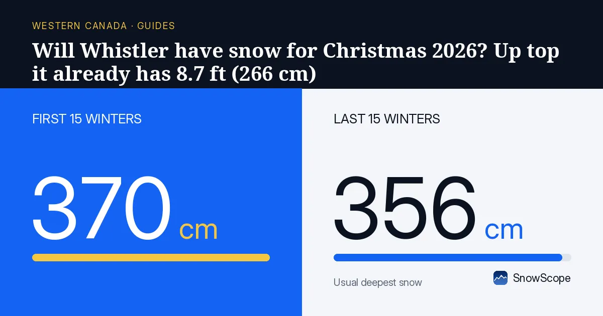
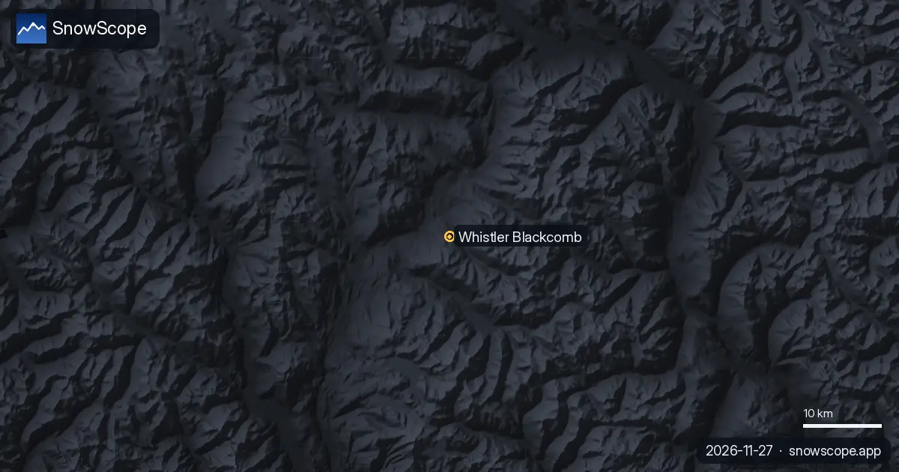

Will Whistler have snow for Christmas 2026? Up top it already has 8.7 ft (266 cm)
Yes. Whistler Blackcomb goes into December with 8.7 ft (266 cm) of snow on its upper slopes, after 4.6 ft (141 cm) fell in the three days to Friday, November 27. In all 46 winters on our record the mid-mountain had a base of at least 50 cm (20 in) by New Year, so the real Christmas question is not the alpine, it is how far down the snow reaches.
See the live snow forecast for Whistler Blackcomb in the SnowScope appSnow depth, powder alerts and the 3D map, free.

What the storm left behind
The numbers of the week are big even for the Coast Mountains: 23 in (58 cm) on Wednesday, 28 in (72 cm) on Thursday and another 4 in (11 cm) by Friday, 6.9 ft (211 cm) over seven days. That is the kind of week that fills the bowls of Blackcomb and the Peak chair area long before the holiday crowd arrives.
Lower down the picture is ordinary rather than spectacular. At 4,777 ft (1,456 m), roughly mid-mountain and the height our history is kept for, the pack is 4.6 ft (141 cm), against 4.7 ft (144 cm) on a usual November 27. The storm loaded the top far more than the middle, which is typical when a warm, wet Pacific system arrives: snow up high, wet snow or rain near the village.
What a normal Christmas looks like at Whistler
On December 25 the usual depth at 4,777 ft (1,456 m) is 7.3 ft (223 cm). One winter in four has less than 5.7 ft (173 cm), one in four more than 8.7 ft (265 cm). December is normally the month the base doubles: the middle of the month sits near 6.6 ft (200 cm) and New Year's Day near 7.4 ft (227 cm).
The leanest winter of the 46 peaked at 8.4 ft (256 cm) (2000-01), the deepest at 17.3 ft (526 cm) (1998-99). Even the lean one gave a skiable Christmas up high, which is why Whistler is one of the safest holiday bets in North America.
The next few days
Saturday and Sunday look dry, then the next round arrives on Monday, November 30, with about 6 in (16 cm) forecast for the upper mountain. Over the coming seven days our forecast adds up to 17 in (44 cm) at the top, 14 in (35 cm) at mid-mountain and only 2 in (6 cm) at the base: the same pattern again, generous up high, thin at the bottom.
Live numbers for every height are on the Whistler Blackcomb snow page, refreshed every day.
Quick answers for Christmas planners
Is the alpine already open? With 8.7 ft (266 cm) up top, the high terrain has more snow than many resorts see by February; lift openings follow the resort's own schedule, so check the operating plan before you go.
Is November snow a good sign for the rest of the winter? Not on its own. Our record shows a usual late-November depth of 4.7 ft (144 cm) at mid-mountain and a usual Christmas of 7.3 ft (223 cm), so most of the holiday base is still built in December. What a deep start does is protect against a dry spell: even if December delivered only half its usual snow, the upper mountain would be skiing well.
When is the snow usually deepest? Late winter. The usual depth at 4,777 ft (1,456 m) keeps rising into March, near 10.8 ft (329 cm), which is why spring trips here are so popular.
So, will it be a white Christmas in the village?
Whistler Village sits at 2,142 ft (653 m), while the top lifts reach 7,411 ft (2,259 m), and that gap is the whole story. In most Decembers the upper mountain is skiing deep while the village streets go from white to slush and back with each storm. A white Christmas on the slopes is close to certain; a white Christmas on the village stroll depends on the week itself and cannot be promised a month ahead.
If skiing to the door matters, pick lodging higher up the Blackcomb side or in the Upper Village, where the snow lasts longer than in Creekside.
Tips for skiers
- Book Christmas week now: with the alpine this deep the usual holiday rush starts early, and the cheapest beds go first.
- Plan the first days on the upper half of the mountain (above about 4,777 ft (1,456 m)) and keep the lower runs for when the next cold storm reaches them.
- Bring a shell that sheds wet snow: holiday storms here often start warm before they turn to dry powder.
- Compare Christmas snow across the West with our Christmas skiing page and the Western Canada snow hub.
- For the weeks after the storm, read our three-week snow outlook for the US and Canada.
About these numbers
Snow numbers: SnowScope's snow map and forecast for today, and our record of 46 past winters at each resort (an estimate for the area, not the resort's own report).
Official avalanche bulletins: Avalanche Canada
Cite this report
For research, teaching or the press: the numbers and charts are free to reuse under CC BY 4.0 with this citation.
SnowScope (2026), Will Whistler have snow for Christmas 2026? Up top it already has 8.7 ft (266 cm), https://snowscope.app/blog/en/2026/11/whistler-christmas-2026-snow-odds-after-big-november-storm.html, accessed 2026-11-27
SnowScope (Atlas Labs). (2026, November 27). Will Whistler have snow for Christmas 2026? Up top it already has 8.7 ft (266 cm). SnowScope snow reports. https://snowscope.app/blog/en/2026/11/whistler-christmas-2026-snow-odds-after-big-november-storm.html
BibTeX
@misc{snowscope2026whistlerchristmas2026sno,
author = {{SnowScope (Atlas Labs)}},
title = {Will Whistler have snow for Christmas 2026? Up top it already has 8.7 ft (266 cm)},
year = {2026},
month = nov,
howpublished = {\url{https://snowscope.app/blog/en/2026/11/whistler-christmas-2026-snow-odds-after-big-november-storm.html}},
note = {Published 2026-11-27 16:24 UTC; accessed 2026-11-27}
}· CC BY 4.0 · Methods, data and tools →
Whistler Blackcomb: snow and temperature by height, this winter vs last (tools) →
Follow Whistler Blackcomb
Free: a message when fresh snow is coming, and the forecast every morning.
More snow reports

Whistler Blackcomb leads Western Canada with 153 cm on upper slopes. Snow covers 398,620 km² across 52 of 57 resorts on 22 November.

Whistler Blackcomb will receive 101 cm of new snow by November 25, far exceeding early-season norms. Mount Cain Alpine Park leads the region with 132 cm forecast.

Mount Washington Alpine Resort leads with 158 cm at the top on 15 November. Fresh snow at Whistler Blackcomb and Mount Cain Alpine Park also scores high for November skiing.